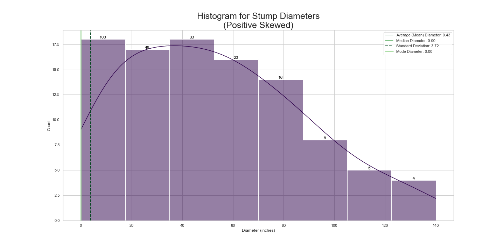
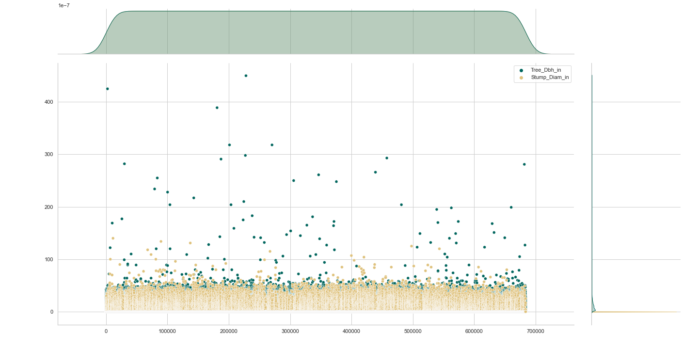
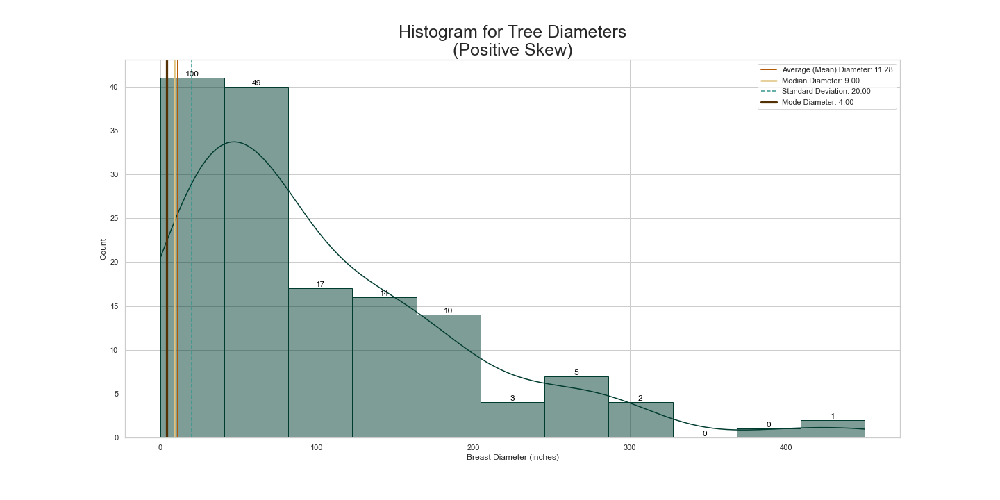
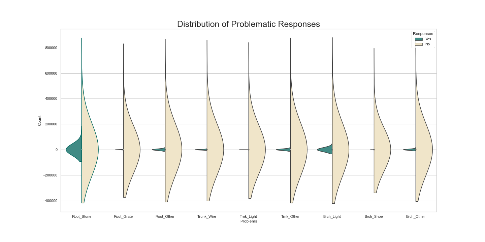
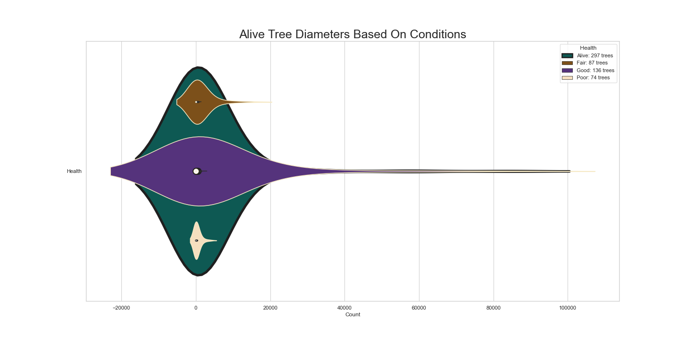
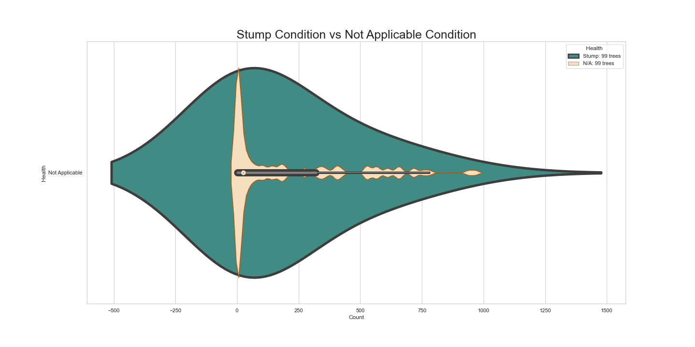
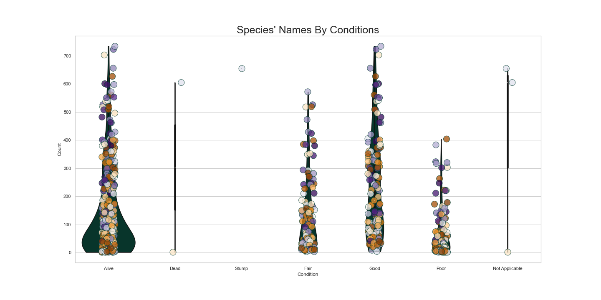

New York 2015 Trees
January 31, 2023 by Marcella
Analysis

My analysis provides key insights into the condition and
management of street trees in the area. Firstly, tree diameters
are primarily concentrated between 50 and 60 inches, with a
notable number of outliers that may stem from human error or
environmental impacts. This suggests potential issues with data
collection or external factors influencing tree growth


Secondly, the mean diameter at breast height for street trees is
11.28 inches, with a median of 9 inches, indicating a wide range
of tree sizes. The large standard deviation of 20 further
emphasizes variability in tree size across New York City.
Additionally, the median tree diameter of 12 inches is notably
higher than the median stump diameter of 3 inches, indicating that
the city's trees are generally larger and older than their stumps.

Thirdly, survey responses reveal that the majority of surveyors
reported 0-2 problems with street trees, with greater variance in
responses reporting higher numbers of problems. This suggests
potential issues with tree roots affecting their health and
vitality.


Fourthly, although the majority of trees in the city are in good
health and labeled as "Alive," there is a need for improvement in
the management and care of trees in "Fair" and "Poor" condition.
The data suggests potential root issues in these trees that need
addressing to ensure their survival and long-term health.

Finally, diameters in the "Not Applicable" category are more
tightly clustered than in the "Stump" category, indicating
potential consistency in this area of data collection. However,
bins with maximum outliers suggest possible data errors or other
issues requiring attention.
Overall, this data analysis provides valuable insights into the
condition of street trees in the city, highlighting areas that may
need additional attention and resources to ensure the health and
vitality of these important urban assets.
Conclusion
The comprehensive street tree census conducted by NYC Parks &
Recreation and partner organizations in 2015 offers crucial
insights into the state of street trees in New York City. Although
the majority of street trees are healthy, the findings underscore
the need to improve and maintain trees in "Fair" and "Poor"
condition. The data analysis also highlights potential root issues
and variations in tree diameter measurements compared to stump
diameter measurements. Further research can be conducted to
investigate the underlying causes of these discrepancies and to
establish effective strategies for managing and caring for street
trees in the New York City area.
Nashville Housing Cleaning
June 21, 2022 by Marcella
Within this comprehensive initiative, a series of carefully designed SQL
queries were executed in SQL Server Management Studio 2018, representing
a pivotal step in optimizing a dataset for enhanced performance. The dataset,
sourced from AlexTheAnalyst on GitHub as part of the Data Analyst Portfolio
Project, was downloaded onto an external thumb drive and systematically
organized into folders. It consists of 19 columns and an impressive 56,477
rows, excluding the header. Key columns include UniqueID, ParcelID, and SaleDate.
| ParcelID |
PropertyAddress |
ParcelID (nash2) |
PropertyAddress (nash2) |
MergedPropertyAddress |
| 001 |
123 Main St |
001 |
|
123 Main St |
| 002 |
|
002 |
456 Oak St |
456 Oak St |
| 003 |
|
003 |
789 Pine St |
789 Pine St |
| 004 |
876 Maple St |
004 |
|
876 Maple St |
| 005 |
543 Elm St |
005 |
|
543 Elm St |
Upon the initial examination in Microsoft Excel, the dataset displayed 18 columns
with a "General" data type, and one column was formatted as "Date (April 9, 2013)."
Notably, all general columns were in uppercase, and the month names in the date column
were presented in title case. A closer scrutiny of the SoldAsVacant column revealed
responses such as No, N, Yes, and Y. Interestingly, several columns, including OwnerName,
OwnerAddress, Acreage, TaxDistrict, LandValue, BuildingValue, TotalValue, YearBuilt,
Bedrooms, FullBath, and HalfBath, contained a noteworthy number of null values.
| UniqueID |
ParcelID |
PropertyAddress |
SalePrice |
SaleDate |
LegalReference |
RowNum |
| 001 |
123456 |
789 Main St |
250,000 |
2023-01-15 |
ABC123 |
2 |
| 002 |
789012 |
456 Oak St |
300,000 |
2023-02-20 |
XYZ789 |
2 |
| 003 |
345678 |
123 Pine St |
200,000 |
2023-03-10 |
LMN456 |
3 |
| 004 |
901234 |
876 Maple St |
400,000 |
2023-04-05 |
PQR789 |
2 |
| 005 |
567890 |
543 Elm St |
150,000 |
2023-05-12 |
STU012 |
3 |
During the transition to SQL Server, despite the absence of initial documentation on
data types, null counts, or distinct value counts, the queries were adeptly organized
into multiple files, categorized based on specific tasks. Following the cleansing process,
the dataset retained 21 columns while maintaining its original 56,477 rows. A total of 26
meticulously crafted query statements were utilized in this endeavor, underscoring the
analytical acumen and dedication invested in the project.
New feature
December 14, 2020 by Chris
This is some additional paragraph placeholder content. It has been
written to fill the available space and show how a longer snippet
of text affects the surrounding content. We'll repeat it often to
keep the demonstration flowing, so be on the lookout for this
exact same string of text.
- First list item
- Second list item with a longer description
- Third list item to close it out
This is some additional paragraph placeholder content. It's a
slightly shorter version of the other highly repetitive body text
used throughout.